🌿 ¿Qué es una Planta?
Las plantas son organismos autótrofos —es decir, producen su propio alimento— a través de la fotosíntesis. A diferencia de los animales, las plantas no necesitan consumir otros seres vivos para obtener energía. Capturan la luz solar, absorben agua y dióxido de carbono, y transforman estos elementos en glucosa (su combustible) y oxígeno (que liberan a la atmósfera).
El cuerpo de una planta está formado por órganos especializados, cada uno con una función específica: la raíz ancla y absorbe, el tallo sostiene y transporta, las hojas capturan luz y realizan fotosíntesis, las flores se encargan de la reproducción, y los frutos protegen las semillas.
🎯 Objetivos de Aprendizaje
Al finalizar este tema serás capaz de: identificar los órganos de una planta y sus funciones, describir la estructura interna de raíz, tallo y hoja, explicar el papel de los tejidos vasculares (xilema y floema), comprender la estructura de la célula vegetal y sus orgánulos, y entender la relación entre la estructura de la planta y la fotosíntesis.
🗺️ Las Partes de una Planta y sus Funciones
Una planta típica se divide en dos sistemas principales: el sistema radicular (parte subterránea) y el sistema caulinar o aéreo (parte visible sobre el suelo). Cada parte tiene una función específica que contribuye a la supervivencia de la planta.
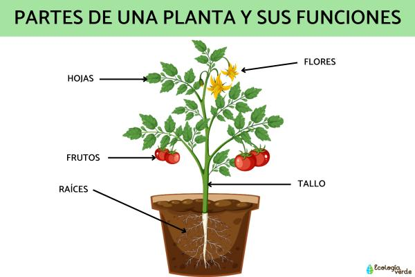
Figura 1: Partes de una planta y sus funciones principales. Fuente: Ecología Verde.
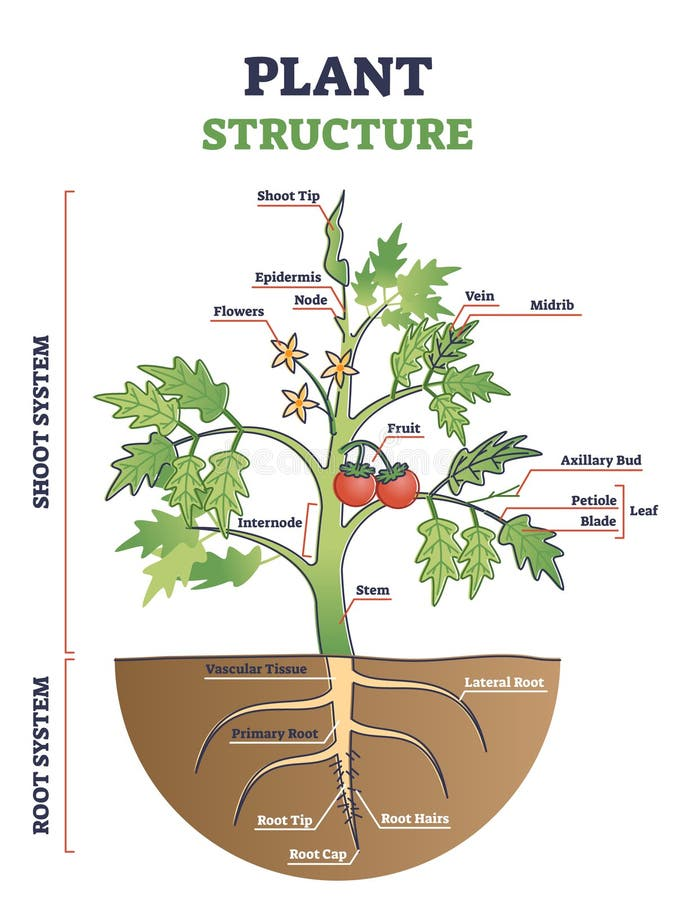
Figura 2: Estructura completa de la planta: sistema de raíces y sistema de brotes. Fuente: Dreamstime.
🥕 Raíz
Ancla la planta al suelo, absorbe agua y minerales, y almacena reservas nutritivas.
🌿 Tallo
Sostiene hojas, flores y frutos. Transporta sustancias entre raíz y hojas.
🍃 Hoja
Órgano principal de la fotosíntesis. Intercambia gases y transpira agua.
🌸 Flor
Órgano reproductor. Produce semillas mediante polinización y fecundación.
🍎 Fruto
Protege y dispersa las semillas. Atrae animales para su dispersión.
🌱 Semilla
Contiene el embrión y reservas. Es la unidad de reproducción y dispersión.
🥕 La Raíz: La Base de la Planta
La raíz es el órgano más importante para la supervivencia de la planta. Sin ella, la planta no podría absorber agua ni nutrientes del suelo. Además, la raíz actúa como un ancla que mantiene la planta firme contra el viento y la lluvia.
Funciones Principales
- Absorción: Capta agua y sales minerales del suelo a través de los pelos radicales.
- Ancoraje: Fija la planta al suelo, evitando que se caiga.
- Almacenamiento: Guarda nutrientes (almidón, azúcares) en raíces tuberosas como la zanahoria.
- Síntesis: Produce hormonas vegetales como citocininas.
- Simbiosis: Forma micorrizas (asociación con hongos) para mejorar absorción.
Estructura Interna
- Epidermis: Capa externa con pelos radiculares.
- Corteza: Almacena almidón y transporta agua.
- Endodermis: Controla qué entra al xilema.
- Cilindro vascular: Contiene xilema (centro) y floema (alrededor).
- Médula: Tejido central de almacenamiento.
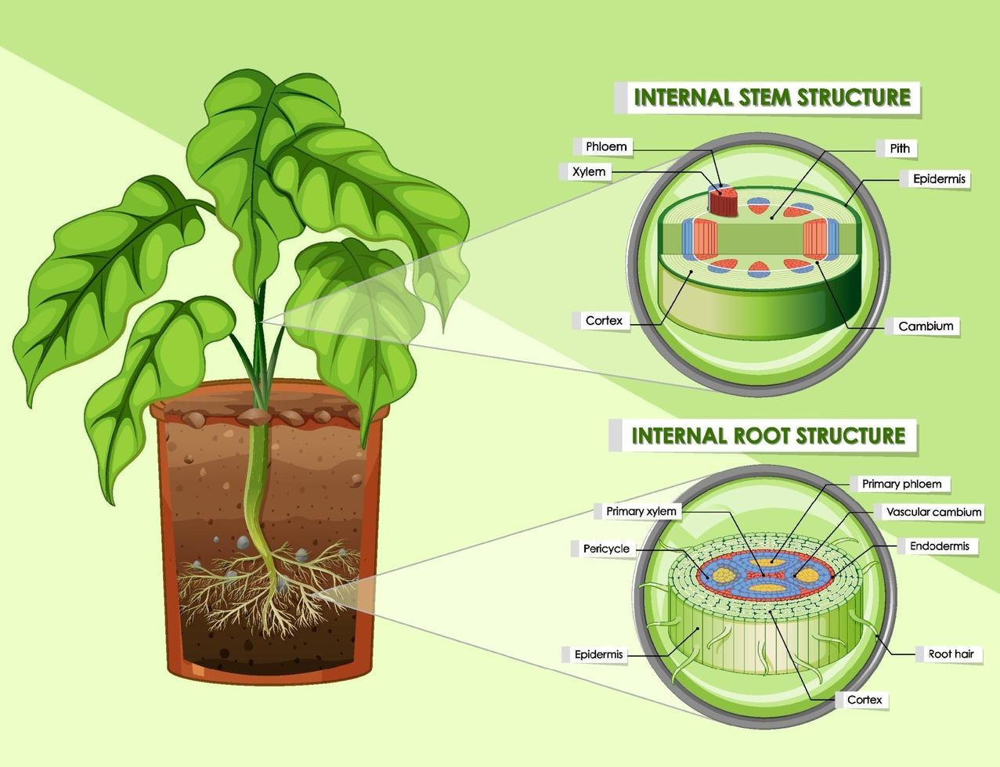
Figura 3: Corte transversal de tallo y raíz mostrando tejidos internos. Fuente: Vecteezy.
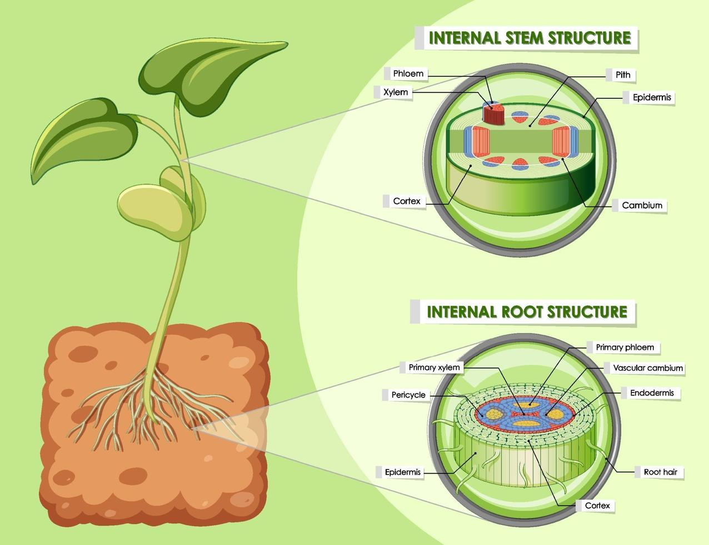
Figura 4: Detalle de la estructura interna: epidermis, corteza, xilema, floema y médula. Fuente: Vecteezy.
Tipos de Raíces
Las raíces se clasifican según su forma, origen y función. Conocer los tipos de raíces nos ayuda a entender cómo diferentes plantas se adaptan a distintos ambientes.
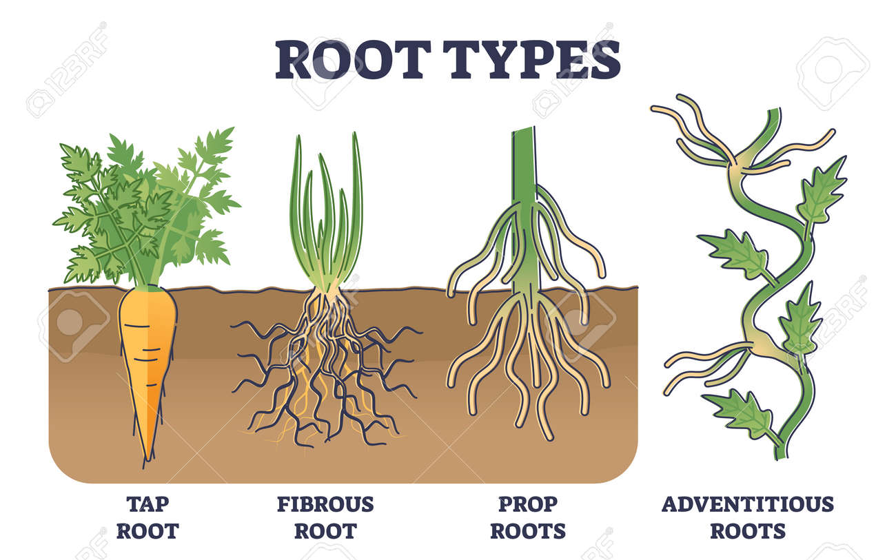
Figura 5: Tipos de raíces según su forma: pivotante, ramificada, fascicular y tuberosa. Fuente: 123RF.
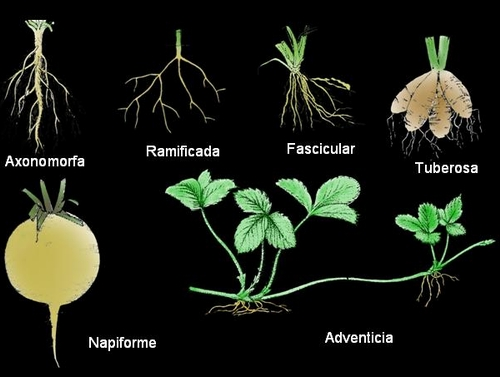
Figura 6: Clasificación de raíces según su forma y estructura. Fuente: Agronomía.
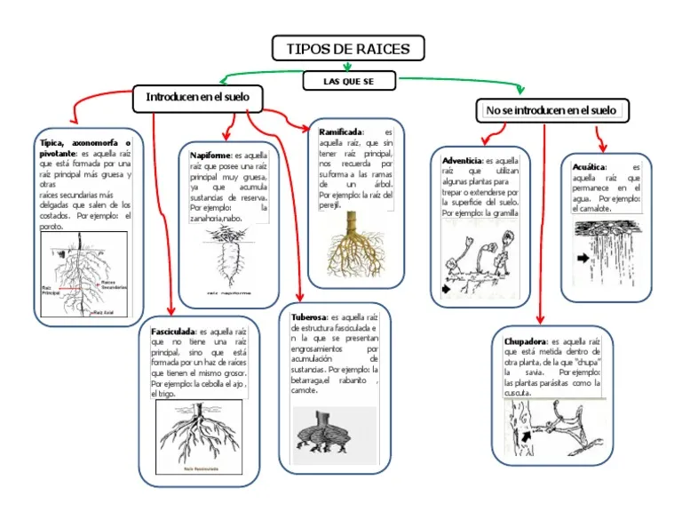
Figura 7: Mapa mental de tipos de raíces: pivotantes, napiformes, fasciculadas, tuberosas, adventicias y aéreas. Fuente: Scribd.
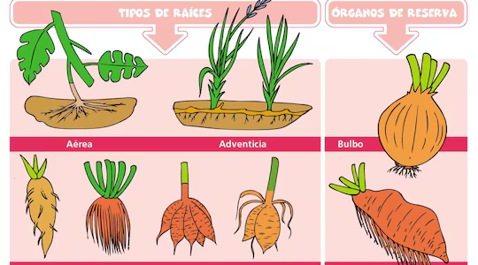
Figura 8: Órganos de reserva en plantas: raíces aéreas, adventicias, bulbo y raíz tuberosa (zanahoria). Fuente: ABC Color.
| Tipo | Características | Ejemplos |
|---|---|---|
| Axonomorfa (Pivotante) | Raíz principal larga y gruesa con raíces laterales delgadas | Zanahoria, diente de león |
| Ramificada (Fibrosa) | Raíces delgadas y ramificadas de igual grosor | Césped, trigo, maíz |
| Tuberosa | Raíz engrosada que almacena almidón | Papa, batata, jícama |
| Napiforme | Raíz globosa en la parte superior y delgada en la inferior | Remolacha, nabo |
| Adventicia | Surgen del tallo o las hojas, no de la raíz principal | Maíz, lirio, pasto |
| Aérea | Crecen en el aire, absorben humedad atmosférica | Orquídeas, helechos |
¿Sabías que...?
La raíz de una planta de sauce puede crecer hasta 30 metros de profundidad para buscar agua. En contraste, el sistema radicular de un árbol puede extenderse horizontalmente hasta 3 veces el ancho de la copa del árbol.
🌿 El Tallo: El Sostén de la Planta
El tallo es el eje central de la planta. Su función principal es sostener las hojas, flores y frutos en posición óptima para recibir luz solar. Además, actúa como la autopista biológica que transporta agua, nutrientes y productos de la fotosíntesis entre la raíz y el resto de la planta.
Funciones Principales
- Soporte: Mantiene hojas y flores elevadas para captar luz.
- Transporte: Xilema sube agua; floema baja glucosa.
- Almacenamiento: Algunos tallos guardan agua (cactus) o almidón (caña).
- Crecimiento: Contiene meristemos apicales para alargarse.
- Reproducción: Algunos tallos producen raíces adventicias (esquejes).
Estructura Interna
- Epidermis: Capa protectora externa.
- Corteza: Tejido de almacenamiento y protección.
- Cámbium: Meristemo que produce xilema y floema secundarios.
- Xilema: Transporta agua y minerales desde la raíz.
- Floema: Transporta glucosa desde las hojas.
- Médula: Tejido central de almacenamiento.
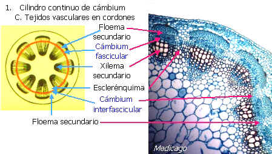
Figura 9: Tejidos vasculares del tallo: floema, cámbium, xilema y esclerénquima. Fuente: Biología.edu.ar.
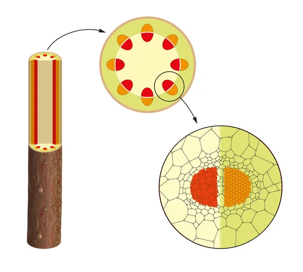
Figura 10: Corte transversal del tallo vegetal: distribución de xilema (rojo) y floema (naranja). Fuente: Depositphotos.
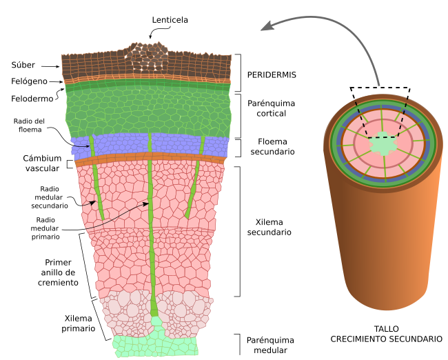
Figura 11: Crecimiento secundario del tallo: formación de anillos de xilema y floema secundarios. Fuente: UVigo.
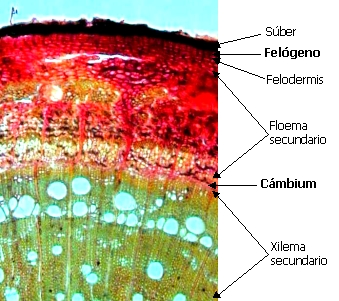
Figura 12: Corte microscópico de tallo: súber, felógeno, felodermis, floema, cámbium y xilema. Fuente: Biología.edu.ar.
Tipos de Tallos
| Tipo | Características | Ejemplos |
|---|---|---|
| Leñosos | Duros, duraderos, con crecimiento secundario. Forman árboles y arbustos. | Roble, rosa, limonero |
| Herbáceos | Blandos, verdes, sin madera. Mueren al final de la temporada. | Tomate, lechuga, girasol |
| Tubérculos | Tallos subterráneos engrosados que almacenan almidón. | Papa, ñame |
| Bulbos | Tallos cortos con hojas modificadas (escamas) que almacenan nutrientes. | Cebolla, ajo, tulipán |
| Rizomas | Tallos horizontales bajo tierra que producen nuevas plantas. | Jengibre, caña de azúcar, helecho |
| Estolones | Tallos rastreros que enraízan en los nudos. | Fresa, pasto bermuda |
¿Sabías que...?
Los anillos de crecimiento de los árboles no solo indican su edad. En años de lluvia abundante, los anillos son más gruesos; en años de sequía, más delgados. Los científicos usan estos patrones para estudiar el clima histórico de una región —una disciplina llamada dendrocronología.
🚰 Xilema y Floema: Los Conductores de la Planta
El xilema y el floema son los tejidos vasculares de la planta. Funcionan como un sistema de transporte bidireccional: el xilema sube el agua desde las raíces, y el floema baja la glucosa desde las hojas. Sin estos tejidos, una planta no podría crecer más allá de unos pocos centímetros.
🔵 Xilema (Transporte Ascendente)
Función: Transporta agua y sales minerales desde la raíz hasta las hojas.
Células: Vasos y traqueidas (celdas muertas al madurar).
Mecanismo: Transpiración —el agua se evapora por los estomas, creando una succión que jala más agua desde abajo.
Dirección: Siempre de raíz a hojas (unidireccional).
🟠 Floema (Transporte Descendente)
Función: Transporta glucosa y otros productos de la fotosíntesis desde las hojas a todo el cuerpo.
Células: Tubos cribosos (celdas vivas).
Mecanismo: Translocación —la glucosa se mueve desde zonas de alta concentración (hojas) a zonas de baja concentración (raíz, frutos).
Dirección: De hojas a raíz, frutos, semillas (multidireccional).
¿Sabías que...?
El xilema puede transportar agua a una velocidad de 40 metros por hora en algunos árboles. Eso significa que el agua que absorbe la raíz de un roble puede llegar a la copa en menos de 2 minutos. El floema, en cambio, es más lento: alrededor de 1 metro por hora.
🍃 La Hoja: La Fábrica de la Fotosíntesis
La hoja es el órgano más importante para la supervivencia de la planta y, de hecho, para la vida en la Tierra. Es aquí donde ocurre la fotosíntesis, el proceso que convierte luz solar, agua y CO₂ en glucosa y oxígeno. Sin las hojas, no habría oxígeno en la atmósfera ni alimento para la mayoría de los seres vivos.
Partes de la Hoja
- Limbo (lámina): Parte plana y verde donde ocurre la fotosíntesis.
- Pecíolo: Tallo que une el limbo con el tallo principal.
- Nervaduras: Vasos conductores (xilema y floema) que irrigan la hoja.
- Estomas: Poros en la epidermis inferior que intercambian gases.
- Cutícula: Capa cerosa que reduce la pérdida de agua.
Funciones de la Hoja
- Fotosíntesis: Produce glucosa usando luz solar.
- Transpiración: Libera vapor de agua, creando succión en el xilema.
- Intercambio de gases: Absorbe CO₂ y libera O₂ por los estomas.
- Almacenamiento: Algunas hojas guardan agua (aloe) o alimentos (cebolla).
- Defensa: Algunas hojas tienen espinas o pelos protectores.
¿Sabías que...?
Un árbol maduro puede tener entre 200,000 y 500,000 hojas. El árbol de álamo temblón puede producir hasta 1 millón de hojas en una sola temporada. La superficie total de todas las hojas de un árbol puede equivaler a la de una cancha de fútbol.
🔬 La Célula Vegetal: La Unidad de la Vida
Las células vegetales tienen características únicas que las diferencian de las células animales. La más importante es la pared celular, que le da rigidez y protección. Además, poseen cloroplastos (donde ocurre la fotosíntesis) y una vacuola central gigante que ocupa hasta el 90% del volumen celular.
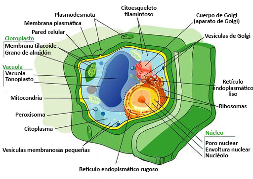
Figura 13: Estructura de la célula vegetal con todas sus partes etiquetadas en español. Fuente: CK-12 Foundation.
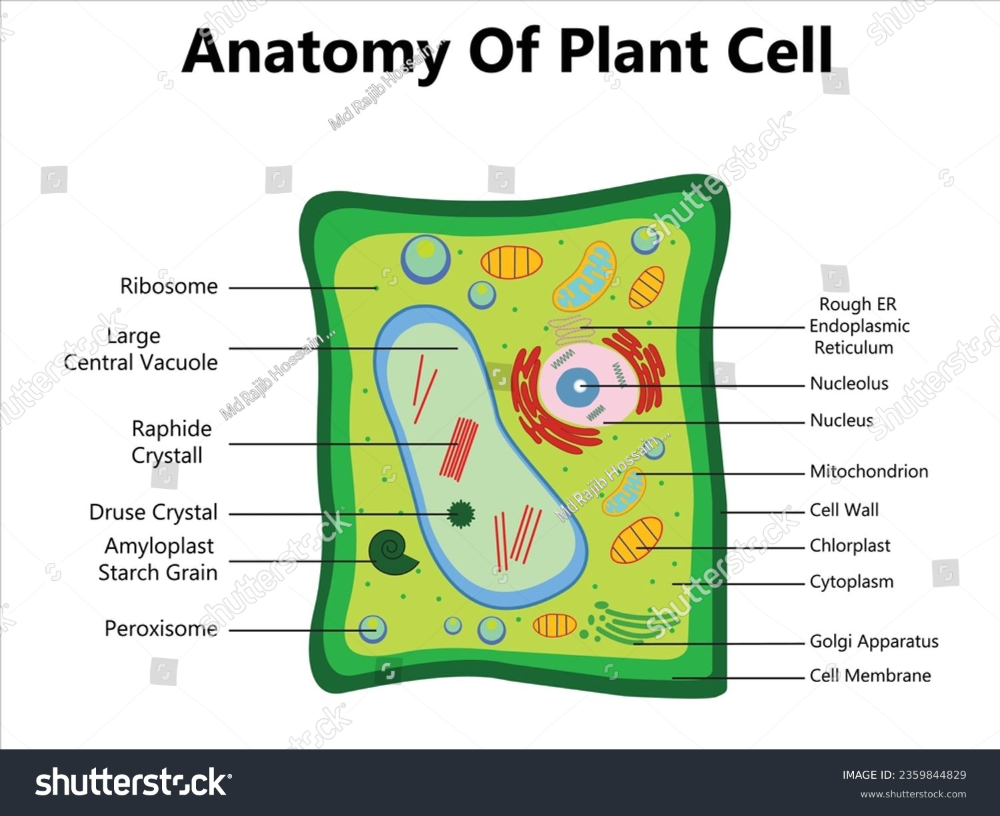
Figura 14: Anatomía de la célula vegetal: pared celular, membrana, cloroplasto, vacuola, núcleo y mitocondrias. Fuente: Shutterstock.
Orgánulos Específicos de la Célula Vegetal
🧱 Pared Celular
Capa rígida externa de celulosa. Protege, da forma y permite el paso de agua.
💧 Vacuola Central
Almacena agua, nutrientes y desechos. Mantiene la turgencia (rigidez) de la célula.
🌿 Cloroplastos
Contienen clorofila. Son las fábricas de fotosíntesis de la célula.
🟢 Plastidios
Orgánulos de almacenamiento: cloroplastos (verdes), cromoplastos (colores), leucoplastos (almidón).
| Característica | Célula Vegetal | Célula Animal |
|---|---|---|
| Pared celular | ✅ Sí (de celulosa) | ❌ No |
| Cloroplastos | ✅ Sí | ❌ No |
| Vacuola | ✅ Grande y central | ⚪ Pequeñas y múltiples |
| Forma | ⚪ Rectangular (rígida) | ⚪ Irregular (flexible) |
| Lisosomas | ❌ Raros o ausentes | ✅ Presentes |
| Centriolos | ❌ No | ✅ Sí |
🌿 Cloroplastos: Las Fábricas de la Fotosíntesis
Los cloroplastos son los orgánulos más importantes de la célula vegetal. Son los únicos capaces de capturar la energía lumínica y convertirla en energía química (glucosa). Sin cloroplastos, no existiría la vida tal como la conocemos.
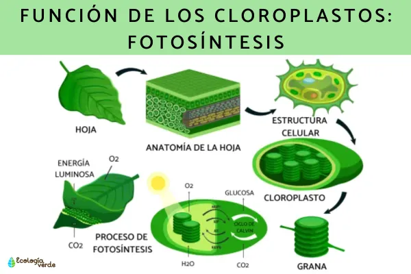
Figura 15: Función de los cloroplastos: fotosíntesis, anatomía de la hoja y estructura celular. Fuente: Ecología Verde.
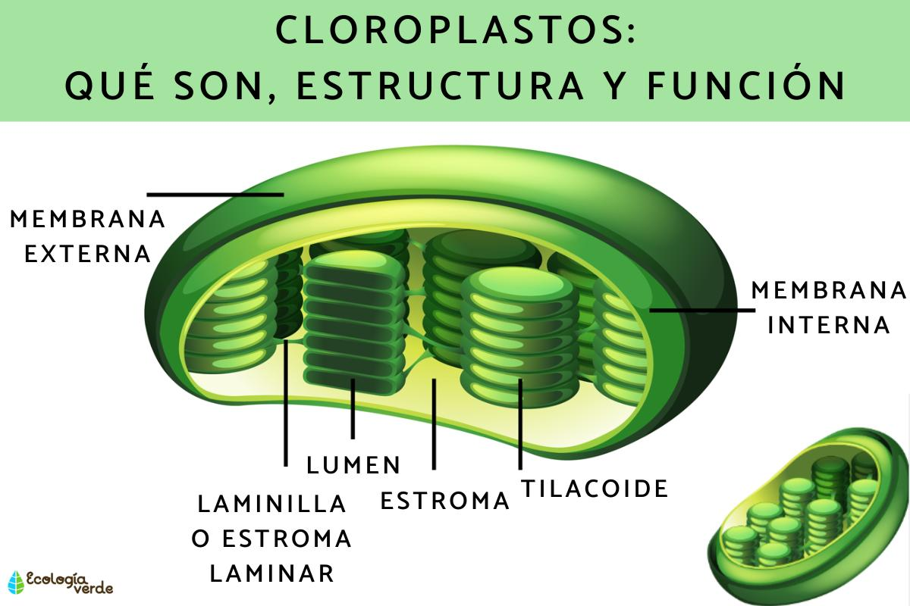
Figura 16: Estructura interna del cloroplasto: membrana externa, interna, tilacoides, grana y estroma. Fuente: Ecología Verde.
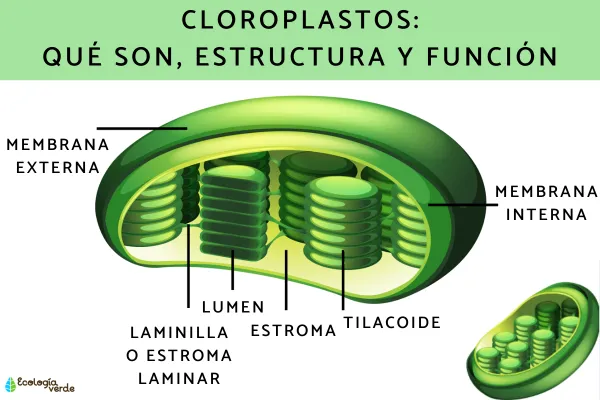
Figura 17: Detalle del cloroplasto: lumen, laminilla o estroma laminar, estroma y tilacoide. Fuente: Ecología Verde.
Estructura del Cloroplasto
- Membrana externa e interna: Doble membrana que protege el interior.
- Estroma: Fluido gelatinoso donde ocurre la fase oscura (ciclo de Calvin).
- Tilacoides: Sacos aplanados que contienen clorofila y proteínas fotosintéticas.
- Grana (granos): Pilas de tilacoides donde ocurre la fase lumínica.
- Láminas o estroma laminar: Tilacoides que conectan los grana entre sí.
- Clorofila: Pigmento verde que absorbe luz roja y azul, refleja verde.
¿Sabías que...?
Una célula vegetal puede contener entre 1 y 100 cloroplastos, dependiendo de su función. Las células del mesófilo de una hoja tienen muchos cloroplastos, mientras que las células de la epidermis no tienen ninguno. Los cloroplastos tienen su propio ADN —un legado de su origen como bacterias simbióticas hace miles de millones de años.
☀️ Fotosíntesis: El Proceso que Sostiene la Vida
La fotosíntesis es el proceso biológico más importante del planeta. Gracias a ella, las plantas producen el oxígeno que respiramos y la glucosa que forma la base de casi todas las cadenas alimentarias. Ocurre exclusivamente en los cloroplastos de las células vegetales.
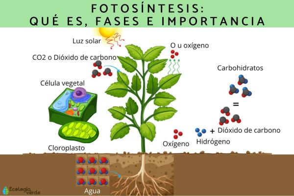
Figura 18: Fotosíntesis: qué es, fases e importancia. Esquema completo en español. Fuente: Ecología Verde.
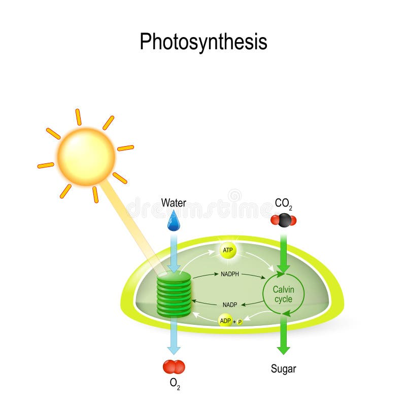
Figura 19: Fotosíntesis en el cloroplasto: reacciones dependientes de la luz y ciclo de Calvin. Fuente: Dreamstime.
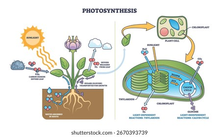
Figura 20: Proceso completo de fotosíntesis: absorción de luz, agua y CO2 para producir glucosa. Fuente: Shutterstock.
La Ecuación de la Fotosíntesis
6 CO₂ + 6 H₂O + Luz Solar → C₆H₁₂O₆ + 6 O₂
Dióxido de carbono + Agua + Energía luminosa → Glucosa + Oxígeno
Fases de la Fotosíntesis
☀️ Reacciones Lumínicas (Fase Clara)
Ocurren en los tilacoides de los grana. La clorofila absorbe luz solar y la convierte en energía química. Se producen ATP y NADPH (transportadores de energía). Como subproducto, se libera oxígeno al dividir el agua (fotólisis). Requiere luz directa.
🌑 Reacciones Oscuras (Ciclo de Calvin)
Ocurren en el estroma del cloroplasto. Usan el ATP y NADPH de la fase lumínica para convertir CO₂ en glucosa. No requiere luz directa, pero depende de los productos de la fase lumínica. Es un ciclo de 3 etapas: fijación de carbono, reducción y regeneración de RuBP.
¿Sabías que...?
Los científicos estiman que las plantas del mundo realizan fotosíntesis a una tasa de aproximadamente 100 mil millones de toneladas de CO₂ al año. Eso equivale a remover todo el CO₂ de la atmósfera en solo 7 años. Sin embargo, también liberan CO₂ por respiración, por lo que el balance neto es crucial para el clima.
¿Sabías que...?
La clorofila es de color verde porque refleja la luz verde y absorbe las longitudes de onda roja y azul. Si la clorofila absorbiera luz verde, las plantas serían de color rojo o púrpura. Algunas algas rojas y bacterias fotosintéticas sí usan otros pigmentos, dándoles colores diferentes.
🌍 Importancia Ecológica de las Plantas
Las plantas no son solo organismos individuales: son el sustento de casi toda la vida en la Tierra. Sin ellas, los ecosistemas colapsarían y la mayoría de las especies desaparecerían.
💨 Producción de Oxígeno
El 70% del oxígeno de la atmósfera proviene de fitoplancton (algas microscópicas), no de los bosques terrestres. Las plantas terrestres aportan el 30% restante.
🌡️ Regulación del Clima
Las plantas absorben CO₂ (gas de efecto invernadero), almacenándolo en su biomasa y en el suelo. Un árbol maduro puede absorber ~22 kg de CO₂ al año.
🏠 Hábitat y Biodiversidad
Un solo árbol puede albergar cientos de especies: insectos, aves, hongos, líquenes y microorganismos. Los bosques tropicales albergan el 50% de las especies del planeta.
🍎 Base de la Cadena Alimentaria
Todos los herbívoros, omnívoros y carnívoros dependen indirectamente de las plantas. Incluso los carnívoros comen animales que comieron plantas.
🌳 Las Plantas en Venezuela
Venezuela alberga una enorme diversidad vegetal gracias a sus múltiples ecosistemas: la Selva Amazónica (la mayor reserva de biodiversidad del país), los Llanos (sabanas con árboles dispersos como el samán), los Andes (bosques nublados con frailejones y orquídeas), y la Cordillera de la Costa (bosques tropicales secos y húmedos). Especies emblemáticas incluyen el araguaney (árbol nacional), la moriche (palma de los llanos), y el apamate (árbol de las flores rosadas).
📝 Verifica tu Aprendizaje
Responde estas preguntas para comprobar lo que has aprendido. (Las respuestas se mostrarán al hacer clic)